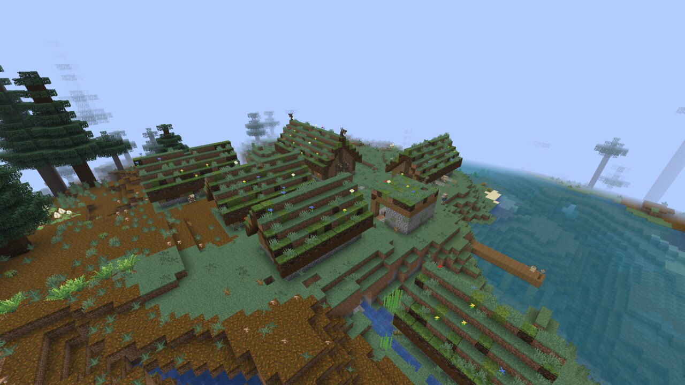
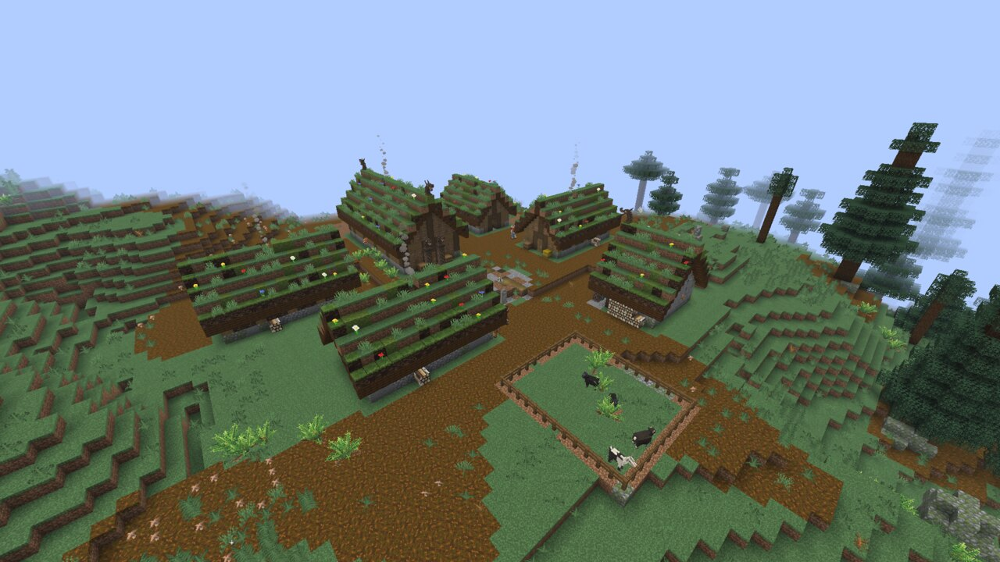
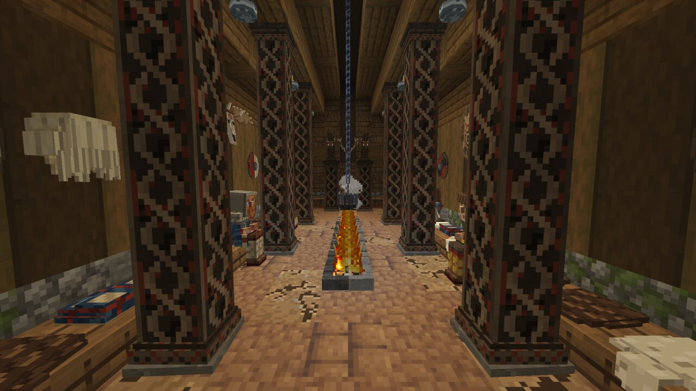
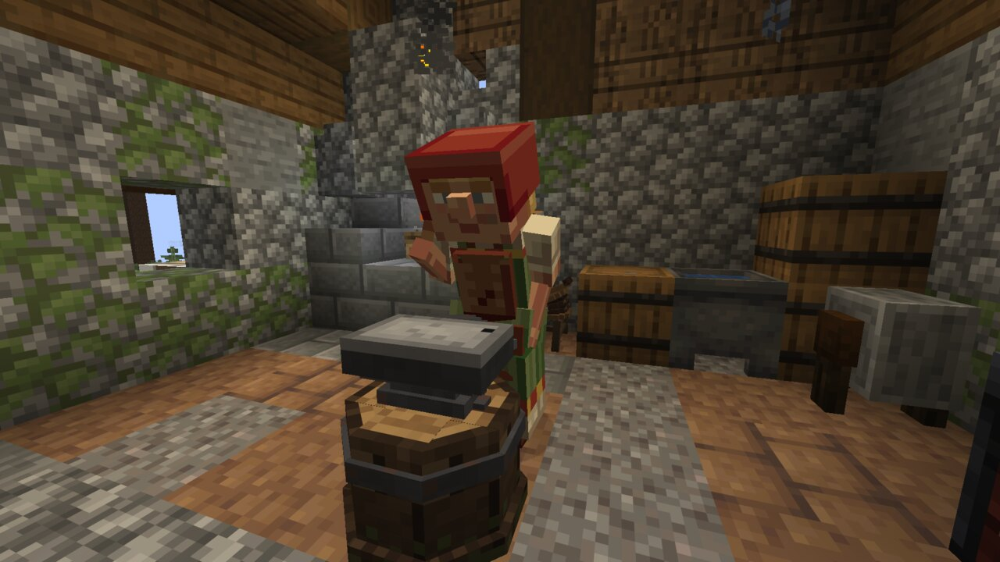
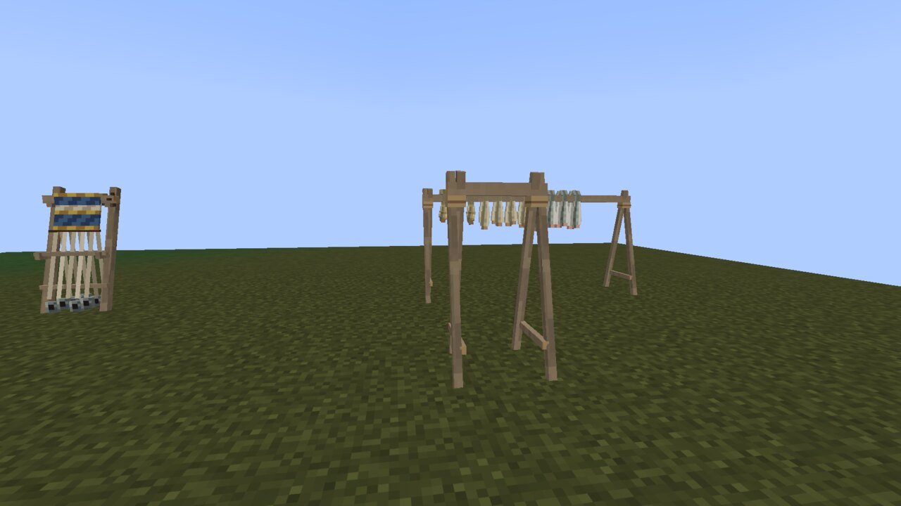

The northern villages
Out in the cold forests and along the cold coasts live the northern folk, in villages of their own: turf-roofed longhouses with their fires lit, a feast hall with carved posts and a high seat, a smithy, a storehouse up on staddle stones and a byre, round a green with a bonfire and a runestone. By the sea there's a boathouse, a jetty with a boat moored to it, and racks of cod drying in the wind; inland, a pasture and racks of hay. The folk keep the hours of the day, trade, and take in a guest who comes with a gift.



Finding one
- Shore villages (víks) stand on low ground a short way back from the sea, in taiga, snowy plains and forests, windswept hills, snowy beaches and stony shores.
- Steadings stand on fairly level, dry ground in taiga, snowy taiga, old-growth taiga, snowy plains and windswept forests.
- They never crowd an ordinary village, and no hostile mobs spawn inside one. The trees keep out of them, so look for a clearing with green turf roofs and smoke rising from their smoke holes.
- Every village has its own name, a Ravensvík or an Elkgarth, which comes up on your screen as you walk in. The folk use it too.
- The pedlar sometimes sells a Map of the North (5 emeralds). Unfold it (use it) and it becomes a map to the nearest northern village, named for it.
The folk
Every one of them has a name and a trade. Hover over one to see who they are.
| Who | Where they work | What they trade (for emeralds) |
|---|---|---|
| The headwoman | Keeps the feast hall: at its cauldron by day, on the high seat at dusk, in her box bed in the hall at night. | Buys honey and bread. Sells flatbread, mead, soapstone lamps, fur rugs, box beds and amber. |
| The smith | At the stump anvil in the smithy, sparks flying. | Buys coal, charcoal and bog iron bars. Sells smith's tongs and hammer, a seax, a bearded axe, staddle stones and woodstacks. |
| The weaver | At the standing loom by her door. | Buys white and brown wool. Sells wadmal, the wadmal cloak, standing looms, sleeping benches and string. |
| The fishers (by the sea) | On the end of the jetty, or at the stockfish racks. | Buy cod and salmon. Sell stockfish, stockfish racks, creels, nets, fishing rods and a spruce boat. |
| The herders (inland) | At the pasture gate, now and then blowing the horn to call the beasts in. | Buy wheat and hay. Sell skyr, wool, leads, hay racks and the herding horn. |

Their day
- Dawn to late afternoon: at work. Now and then one takes a stroll round the green.
- Dusk: everyone goes in to the feast hall and sits on the benches along the walls, the headwoman on the high seat. They raise their horns: Skál!
- Night: home to their own box beds. Wake one and they'll only mumble.
- Rain: those who work out of doors wait it out in the hall.
- They talk. Two of them close together will pass the time: the weather, the season, their work, the feast, and you, if you're near (whether you're their guest, and what you're wearing: they notice a wadmal cloak, the antler crown, a moss cloak).
Guest-right
Bring the headwoman a gift: bread, flatbread, mead, a honey bottle, a cake or a pumpkin pie. She takes one, welcomes you under the village's roof, and sends you off with 3 flatbread and 2 stockfish. From then on you're that village's guest: the folk greet you by name, and you pay a quarter less for anything that costs 2 emeralds or more (at least 1 emerald less).
Don't strike them
Hit one of the folk and word travels: none of the northern folk anywhere will deal with you for 3 days (7 if you kill one). They'll glare at you as you pass.
Their things
| Block | What it does |
|---|---|
| Stockfish Rack Stockfish rack | Hang a pair of raw cod or salmon on it (use it holding two). Under the open sky and out of the rain they dry: fresh, then drying, then hard golden stockfish, in about a day and a half where it's cold and two and a half elsewhere. Use it to take down 2 stockfish. Racks set side by side join into one long rack. |
| Standing Loom Standing loom | Feed it wool, a fleece at a time: the cloth grows down from the top beam. After three, use it to cut a bolt: 2 wadmal. |
| Box Bed Box bed | An enclosed bed with a curtain. Sleep in it and set your spawn, like any bed. |
| Sleeping Bench Sleeping bench | Sit on it. Beside a lit long hearth (or any fire) it warms you through (Warmth) and mends you a little. Benches side by side join up. |
| Hay Rack Hay rack | A hesje. Drape 2 wheat over it; shears take it down again. Stacks two high. |
| Soapstone Lamp Soapstone lamp | A fish-oil lamp: hang it under a beam or stand it on its foot. Light 13. |
| Fish Creel Fish creel | Put a fish in it and its tail pokes out; take it out again. |
| Hanging Net Hanging net | A net with its floats and sinkers, to hang on a wall. |
| Woodstack Woodstack | Split firewood stacked to season. It burns. |
| Fur Rug Fur rug | A sheepskin for the floor. |
| Staddle Stone Staddle stone | The mushroom-shaped stones a storehouse stands on, so the rats can't climb in. |
| Hanging Stockfish Hanging Smoked Meat Onion String Hung from the beams | Stockfish, smoked meat and an onion string, to hang under a beam (they need something above to hang from). |
| Grain Sack Grain sack | Set up to three in one spot, like candles. |
| Soapstone Pot Soapstone pot | A cooking pot: use it to lift its lid off and on. |
| Wall Shelf Wool Bale Fish Trap Oars And about the house | A shelf of bowls, a bale of fleeces, a wicker fish trap, a pair of oars (two blocks tall). |

Food, cloth and the horn
| Item | What it's for |
|---|---|
| Stockfish Stockfish | Food (6), from the rack. Chewy: it takes a moment to eat. |
| Skyr Skyr | Food (6) in a bowl, from the herder (or milk and a bowl). |
| Flatbread Flatbread | Food (5), from the headwoman. |
| Wadmal Wadmal | Coarse woollen cloth from the standing loom. |
| Wadmal Cloak Wadmal cloak | Worn on the chest: as good as two pieces of leather against the winter's cold. |
| Herding Horn Herding horn | Blow it: the cattle, sheep, pigs, goats and hens within 32 blocks come to you, following the sound for 10 seconds. A leashed beast stays put. |
Crafting
| Makes | Recipe |
|---|---|
| Stockfish Rack | sticks round string: SSS / T T / S S |
| Standing Loom | sticks, string and clay balls (the loom weights): SSS / STS / CTC |
| Box Bed | any bed in a ring of 8 spruce planks |
| Sleeping Bench ×3 | 3 leather over 3 planks |
| Hay Rack ×2 | SWS / SWS: sticks either side of wheat |
| Soapstone Lamp ×2 | coal or charcoal over string over a smooth stone slab |
| Fish Creel | S S / STS / SSS: sticks and string |
| Hanging Net | 5 string in an X |
| Woodstack ×3 | L L / LLL: 5 logs |
| Fur Rug ×2 | leather, wool, leather |
| Staddle Stone ×2 | 5 cobblestone in a T |
| Wadmal Cloak | WIW / WWW: 5 wadmal and an iron nugget for the pin |
| Skyr | a milk bucket and a bowl |
| Herding Horn | a goat horn and string |
| Hanging Stockfish | string and 3 stockfish |
| Hanging Smoked Meat | string, cooked mutton and a cooked porkchop |
| Onion String | string, 2 onions and a garlic |
| Grain Sack | any wool and 3 wheat |
| Soapstone Pot | S S / SSS: smooth stone |
| Wall Shelf | 2 planks, a stick and a bowl |
| Wool Bale | 4 wool and string |
| Fish Trap | 4 sticks and 2 string |
| Oars | 2 planks and 2 sticks |
Advancements
- Northern Folk: Trade with the folk of a northern village
- Guest-Right: Bring the headwoman a gift and be taken in as a guest
- Hard as Wood: Dry cod on a stockfish rack and take it down
- Warp and Weft: Weave a bolt of wadmal on a standing loom
- Bring Them Home: Call the beasts with a herding horn